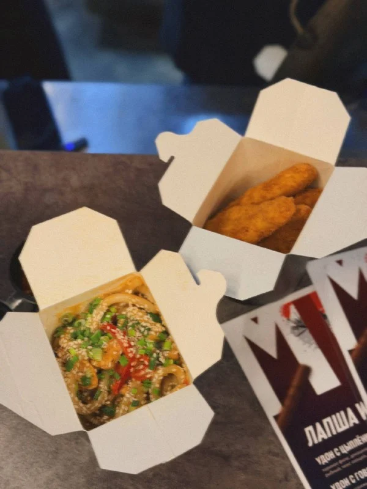
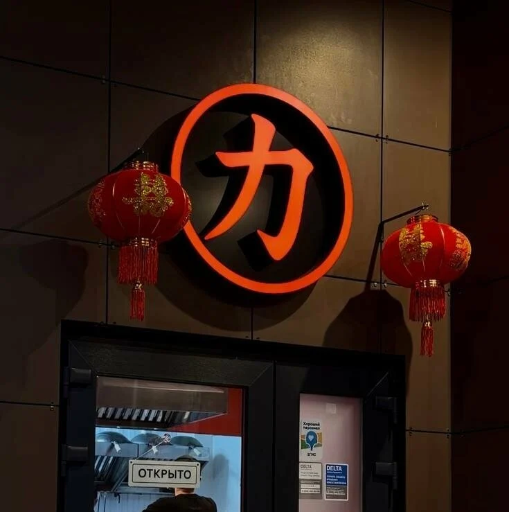
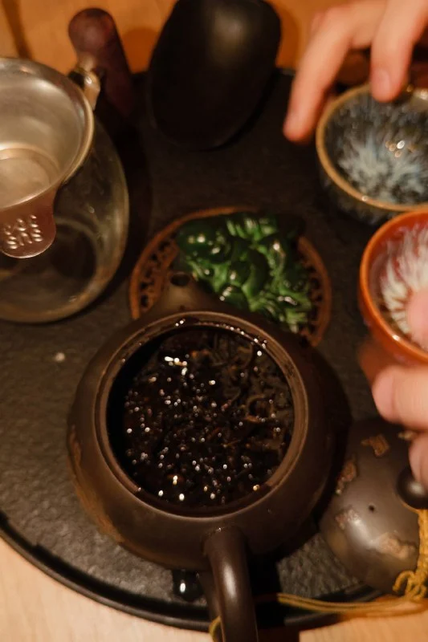

ПАНАЗИАТСКАЯ КУХНЯ.
КИТАЙСКИЙ ЧАЙ.
Лапша вок, рамен, том-ям и тайский рис.
В кафе, с собой или с доставкой.
Доставка и самовывоз11:30–22:00


СОВЕТСКАЯ17Б
КАФЕ ЛИ
В ВОЛГОГРАДЕ
Паназиатская кухня.
Лапшичная и чайная.
Камерное кафе на Советской, 17Б. В меню: лапша вок, рамен, том-ям, тайский рис и закуски. Можно поесть в кафе, заказать доставку или забрать блюда с собой.
Планируете визит компанией? Напишите администратору заранее.
КИТАЙСКИЙ
ЧАЙ
В Ли можно попробовать китайский чай.
Поможем выбрать сорт.
Шу пуэрДа Хун ПаоГаба АлишаньТе Гуань Инь
Наличие сортов и стоимость уточняйте у администратора.
Уточнить чайное меню
ЧАЕПИТИЕ В ЛИДОСТАВКА
И САМОВЫВОЗ
Выберите блюда и соберите заказ.
Администратор подтвердит стоимость и время готовности.
Время и стоимость доставки уточним в переписке.
ОТЗЫВЫ
ГОСТЕЙ
Отзывы о кухне, чае и обслуживании на Яндекс Картах.
Читать 71 отзыв на Яндекс Картах Рейтинг и количество оценок на 11 октября 2026.